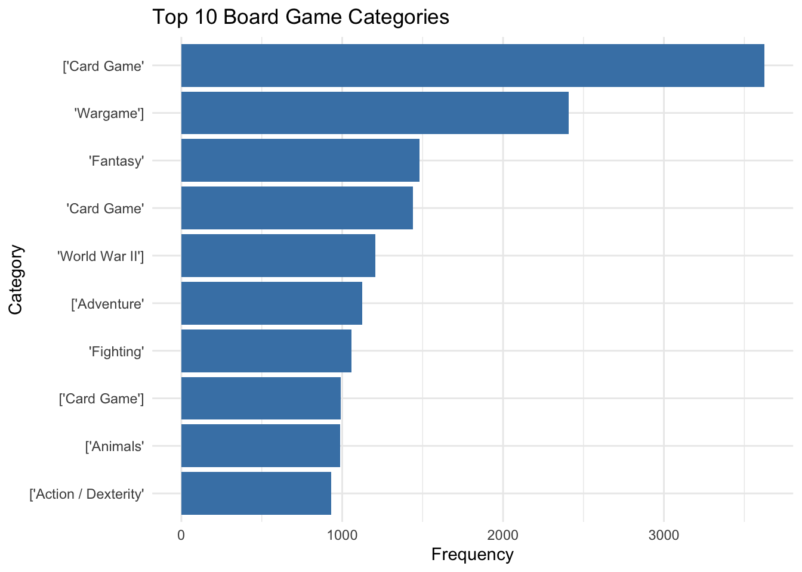

# Load necessary libraries
library(readr)
library(dplyr)
library(tidyr)
library(ggplot2)
library(janitor)
library(tidytext)
library(tidyverse)
library(knitr)
library(stringr)
# Or read in the data manually
ratings <- readr::read_csv('ratings.csv')
details <- readr::read_csv('details.csv')
#kable(head(ratings))
#kable(head(details))HP2: Board Games
Introduction
Objective
Explore the patterns in board game design, ratings, and user preferences using the BoardGameGeek dataset. The study focuses on game specifications, player count, and publication trends, aiming to derive insights into factors contributing to game popularity.
Methods
The dataset was analyzed using R. Techniques included data cleaning, aggregation, and visualization to explore trends in game characteristics and ratings
Data Dictionary
ratings.csv
| variable | class | description |
|---|---|---|
| num | double | A unique identifier for each game within the dataset. |
| id | double | The BoardGameGeek ID for the game, used for linking to other datasets or resources. |
| name | character | The official name of the board game, as listed on BoardGameGeek. |
| year | double | The year the game was first published or made available to the public. |
| rank | double | The global rank of the game based on user ratings, where lower ranks indicate higher ratings. |
| average | double | The average user rating for the game, calculated across all submitted ratings. |
| bayes_average | double | A Bayesian-adjusted average rating, incorporating a prior to reduce the influence of outliers. |
| users_rated | double | The total number of users who have rated the game. |
| url | character | The URL to the game’s page on BoardGameGeek, providing more details and user reviews. |
| thumbnail | character | A URL to a thumbnail image of the game, often showing its box art or key visuals. |
details.csv
| variable | class | description |
|---|---|---|
| num | double | A unique identifier for each game within the dataset. |
| id | double | The BoardGameGeek ID for the game, used for linking to other datasets or resources. |
| primary | character | The primary or most common name of the game, often used as its official title. |
| description | character | A detailed textual description of the game, including its theme, mechanics, and objectives. |
| yearpublished | double | The year the game was officially published or released to the public. |
| minplayers | double | The minimum number of players required to play the game. |
| maxplayers | double | The maximum number of players that the game can accommodate. |
| playingtime | double | The estimated total time, in minutes, needed to complete a game session. |
| minplaytime | double | The shortest estimated time required to complete a game session. |
| maxplaytime | double | The longest estimated time required to complete a game session. |
| minage | double | The minimum recommended age for players, often based on game complexity and content. |
| boardgamecategory | character | A categorical label describing the theme or genre of the game, such as “Strategy” or “Fantasy”. |
| boardgamemechanic | character | A textual description of the gameplay mechanics, such as “Deck Building” or “Dice Rolling”. |
| boardgamefamily | character | A classification grouping games into families, often based on shared themes or settings. |
| boardgameexpansion | character | A list of expansions or add-ons related to the game, if applicable. |
| boardgameimplementation | character | A description of specific implementations or adaptations of the game. |
| boardgamedesigner | character | The name(s) of the game’s designer(s), who created its mechanics and concept. |
| boardgameartist | character | The name(s) of the artist(s) who contributed to the visual design of the game. |
| boardgamepublisher | character | The name of the publishing company that released the game. |
| owned | double | The number of users who have marked the game as owned in their BoardGameGeek profile. |
| trading | double | The number of users who have listed the game as available for trade. |
| wanting | double | The number of users who have expressed a desire to own the game. |
| wishing | double | The number of users who have added the game to their wish list. |
Data Import and Cleaning
Import data for board game ratings and details.
Perform data cleaning: handle missing values, correct data types, and remove duplicates.
# Clean column names and adjust specific variables
details <- details %>%
clean_names()
#rename_with(~ gsub("^boardgame", "", .), starts_with("boardgame"))
# Check for missing values
colSums(is.na(details)) num id primary
0 0 0
description yearpublished minplayers
1 0 0
maxplayers playingtime minplaytime
0 0 0
maxplaytime minage boardgamecategory
0 0 283
boardgamemechanic boardgamefamily boardgameexpansion
1590 3761 16125
boardgameimplementation boardgamedesigner boardgameartist
16769 596 5907
boardgamepublisher owned trading
1 0 0
wanting wishing
0 0 # Convert relevant columns to integer
details <- details %>%
mutate(across(c(yearpublished, minplayers, maxplayers, minage), as.integer))
# Fill missing numerical values with 0 and character values with "Unknown"
details <- details %>%
mutate(across(where(is.numeric), ~ replace_na(., 0))) %>%
mutate(across(where(is.character), ~ replace_na(., "Unknown")))
# Merge datasets by 'num' or 'id'
merged_data <- details %>%
left_join(ratings %>% clean_names(), by = "num")Data Exploration
Let’s start by taking a broad look at the landscape of board games over time by examining the top 10 most popular games:
# Filter top 10 games
top_10_games <- ratings %>%
filter(!is.na(year) & rank <= 10) %>%
arrange(rank)
# Plot
ggplot(top_10_games, aes(x = year, y = rank, label = name)) +
geom_point(color = "blue") +
geom_text(size = 3, vjust = -0.5) +
labs(title = "Top 10 Board Games Over Time",
x = "Year",
y = "Global Rank")What is the most common board game category?
Rather than a comprehensive analysis, lets establish a focus and first identify the most common category of board games.
# Count the most frequent categories
category_counts <- merged_data %>%
filter(boardgamecategory != "Unknown") %>%
separate_rows(boardgamecategory, sep = ",") %>%
count(boardgamecategory, sort = TRUE)
# Plot the top 10 categories
ggplot(category_counts[1:10, ], aes(x = reorder(boardgamecategory, n), y = n)) +
geom_bar(stat = "identity", fill = "steelblue") +
coord_flip() +
labs(title = "Top 10 Board Game Categories",
x = "Category",
y = "Frequency") +
theme_minimal()
# Analyze the most common category
most_common_category <- details %>%
separate_rows(boardgamecategory, sep = ", ") %>%
group_by(boardgamecategory) %>%
summarize(count = n()) %>%
arrange(desc(count)) %>%
slice(1)From this, we see that Card Games are by far the most popular board games when compared to other game modes. However, this includes a lot of old basic card games that are no longer played much anymore. Lets see how times have changed to match more recent times.
How do ratings for card games change over time (1990 to present)?
To analyze how the average ratings for card games have evolved over time, we limit the data set to games published from 1990 onward.
# Filter for card games published from 1990 onward
card_games <- details %>%
filter(
grepl("Card Game", boardgamecategory) &
yearpublished >= 1990
)
# Join with ratings data
card_games_data <- card_games %>%
left_join(ratings %>% clean_names(), by = "num")
# Group by year and calculate average ratings
card_games_trends <- card_games_data %>%
filter(!is.na(average)) %>%
group_by(yearpublished) %>%
summarize(avg_rating = mean(average, na.rm = TRUE))
# Plot ratings over time
ggplot(card_games_trends, aes(x = yearpublished, y = avg_rating)) +
geom_line(color = "blue", linewidth = 1) +
geom_point(color = "darkblue", size = 2) +
labs(
title = "Average Ratings for Card Games (1990 to Present)",
x = "Year Published",
y = "Average Rating"
)We see in recent years, there has been a significant decline in the popularity of card games. This downward trend suggests a shift in entertainment preferences, as card games seem to be losing their appeal compared to other forms of games.
# Analyze mechanics for card games
card_mechanics <- card_games_data %>%
separate_rows(boardgamemechanic, sep = ", ") %>%
group_by(boardgamemechanic) %>%
summarize(
avg_rating = mean(average, na.rm = TRUE),
count = n()
) %>%
arrange(desc(avg_rating))
# Filter mechanics with sufficient representation
top_mechanics <- card_mechanics %>%
filter(count >= 5) %>%
arrange(desc(avg_rating))
# View top mechanics
kable(head(top_mechanics))| boardgamemechanic | avg_rating | count |
|---|---|---|
| ‘Turn Order: Role Order’ | 7.496000 | 5 |
| ‘Traitor Game’] | 7.493636 | 11 |
| ‘Delayed Purchase’ | 7.336250 | 8 |
| ‘Map Addition’ | 7.336000 | 5 |
| ‘Score-and-Reset Game’ | 7.304444 | 9 |
| ‘Melding and Splaying’ | 7.304167 | 12 |
It seems that the highest-rated mechanics in card games often involve nuanced player interactions or innovative strategic elements. For example
- Turn Order: Role Order (7.50) and Traitor Game (7.49) emphasize dynamic social roles and hidden information, adding depth to gameplay.
- Melding and Splaying (7.30) (https://boardgamegeek.com/boardgamemechanic/2981/melding-and-splaying) and Layering (7.18), both having high counts, introduce unique ways of managing cards, offering new strategic opportunities
# Analyze mechanics across all games
all_mechanics <- details %>%
separate_rows(boardgamemechanic, sep = ", ") %>%
left_join(ratings %>% clean_names(), by = "num") %>%
group_by(boardgamemechanic) %>%
summarize(
avg_rating = mean(average, na.rm = TRUE),
count = n()
) %>%
arrange(desc(avg_rating))
# Filter mechanics with sufficient representation
top_all_mechanics <- all_mechanics %>%
filter(count >= 10) %>%
arrange(desc(avg_rating))
# View top mechanics
kable(head(top_all_mechanics))| boardgamemechanic | avg_rating | count |
|---|---|---|
| [‘Automatic Resource Growth’ | 7.514000 | 10 |
| ‘Increase Value of Unchosen Resources’ | 7.450909 | 33 |
| ‘Bribery’ | 7.407273 | 11 |
| ‘Turn Order: Pass Order’ | 7.380000 | 14 |
| ‘Delayed Purchase’ | 7.317333 | 15 |
| ‘Follow’ | 7.272059 | 34 |
Meanwhile, in highly-rated mechanics across all board games, mechanics that emphasize resource management and economic systems are prevalent, such as:
- Automatic Resource Growth (7.51) and Increase Value of Unchosen Resources (7.45), which reward strategic planning over time.
- Bribery (7.41) and Turn Order: Pass Order (7.38), which incorporate negotiation and decision-making under constraints.
# Analyze word frequency in card game descriptions
# Extract and tokenize descriptions specifically for card games
card_game_descriptions <- card_games_data %>%
filter(description != "Unknown") %>%
select(description)
# Tokenize words and calculate frequency
word_frequency <- card_game_descriptions %>%
unnest_tokens(word, description) %>%
filter(!word %in% stop_words$word) %>% # Remove common stop words
count(word, sort = TRUE)
# Visualize the word frequency as a bar plot
ggplot(word_frequency %>% slice_head(n = 20), aes(x = reorder(word, n), y = n)) +
geom_bar(stat = "identity", fill = "lightblue") +
coord_flip() +
labs(
title = "Most Common Words in Card Game Descriptions",
x = "Word",
y = "Frequency"
) +
theme_minimal()it seems that the top word is just a 10, which doesn’t really show anything. lets look for bigrams and remove double numbers form the commonwords
# Analyze themes using bigram analysis, filtering out numeric values
# Tokenize the descriptions into bigrams
card_game_bigrams <- card_game_descriptions %>%
unnest_tokens(bigram, description, token = "ngrams", n = 2)
# Separate bigrams into two words for further processing
separated_bigrams <- card_game_bigrams %>%
separate(bigram, into = c("word1", "word2"), sep = " ") %>%
filter(
!word1 %in% stop_words$word,
!word2 %in% stop_words$word,
!str_detect(word1, "^\\d+$"), # Remove word1 if it is purely numeric
!str_detect(word2, "^\\d+$") # Remove word2 if it is purely numeric
)
# Recombine words into cleaned bigrams and calculate frequency
bigram_frequency <- separated_bigrams %>%
unite(bigram, word1, word2, sep = " ") %>%
count(bigram, sort = TRUE)
# Visualize the top 20 bigrams as a bar plot
ggplot(bigram_frequency %>% slice_head(n = 20), aes(x = reorder(bigram, n), y = n)) +
geom_bar(stat = "identity", fill = "coral") +
coord_flip() +
labs(
title = "Most Common Bigrams in Card Game Descriptions (Excluding Numbers)",
x = "Bigram",
y = "Frequency"
) Conclusion
The BoardGameGeek dataset reveals several key insights into the trends, preferences, and ratings of board games over time. We observed a notable decline in the popularity of card games, especially in recent years, suggesting a shift in gaming preferences. The most common board game categories are dominated by card games, although this includes older games that are less relevant today. Additionally, mechanics that focus on strategic elements, resource management, and player interactions tend to receive higher ratings across both card games and board games in general. The bigram analysis of game descriptions also highlighted the prevalence of through instructions for strategic themes.